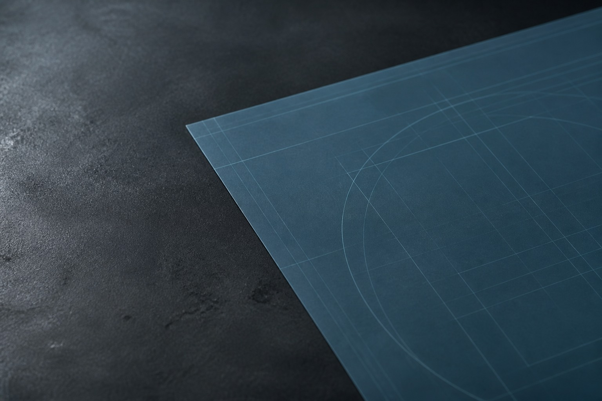

Michał Cholewczyński
Tworzę strony internetowe i aplikacje webowe, używając HTML, CSS, PHP, MySQL, Astro, Tailwind CSS i Hygraph.
Zobacz projekty
Wykonane projekty

GSM Recycling
Strona internetowa dla inicjatywy GSM Recycling zajmującej się recyklingiem nieużywanych telefonów.
Została stworzona za pomocą HTML oraz frameworka TailwindCSS. Na stronie znajduje się formularz kontaktowy wykorzystujący zewnętrzne narzędzie do przesyłania wiadomości.
- HTML
- Tailwind CSS

ATARImuzeum
Strona internetowa muzeum poświęconego komputerom Atari.
Posiada prosty panel administracyjny pozwalający na dodawanie postów, które przechowywane są w bazie danych MySQL. Stylistyka strony bezpośrednio nawiązuje do wyglądu systemu operacyjnego Atari TOS
- PHP
- CSS
- MySQL

Serwis GSMdoctor
Internetowy cennik serwisu telefonów GSMdoctor.
Frontend zaimplementowany w nowoczesnym frameworku Astro, wykorzystując TailwindCSS. Treść strony zarządzana jest przez headless CMS Hygraph i pobierana przez GraphQL.
- Astro
- Tailwind CSS
- Hygraph
Kontakt
Masz pomysł na stronę internetową lub aplikację? Napisz, żeby omówić zakres projektu i kolejny krok.
Napisz e-mail: michal@cholewczynski.pl